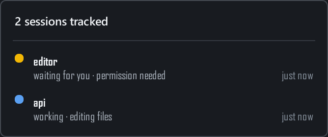
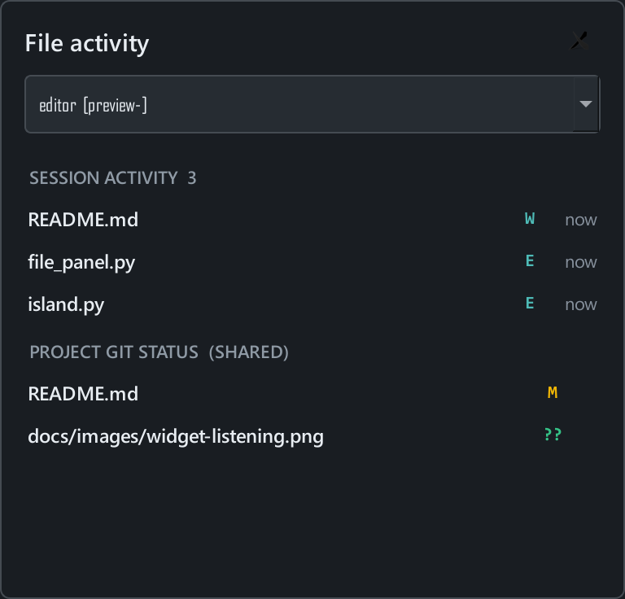

Catch the moments that matter
A permission request, a completed turn, an error. Color, motion, and an optional chime make the change visible.
A companion for Claude Code on Windows
Stay in flow. Know when Claude needs you.
Your sessions, their status, and the files they touch.
A small widget that keeps it all in sight.
Ready when you are. One session, quietly listening.
Let Claude work while you do. Blinkdock stays near the top of your screen and expands when a session needs attention.
A permission request, a completed turn, an error. Color, motion, and an optional chime make the change visible.
A single count opens your session list. The session that needs you most takes priority on the widget.
Start Claude with the optional Windows Terminal launcher to link a session to its own window.
Multiple sessions
Working on the API and the interface at the same time? Each session keeps its own state. Open the list to see the project, activity, and time since its last event.
Launcher-linked sessions can bring their exact terminal window forward. Sessions started normally are still monitored.
Session setup

File activity
See the files touched by a session's successful Edit and Write calls, alongside the current Git status of its project.
Git status refreshes only while the file panel is open. Changes made through shell commands appear in Git status, without being attributed to a particular session.
Blinkdock reflects Claude Code's latest hook event. When events stop arriving, it reports uncertainty.
Manual interruptions and some background events may not emit a matching hook. Read the behavior and limits.
Get started
You'll need Windows 10 or 11, Python 3.10+, and an installed, signed-in Claude Code CLI.
Clone the repository or download the ZIP.
Use the same Python installation to run Blinkdock.
Start a new session with your usual
claude command.
git clone https://github.com/benmaster82/Blinkdock.git
cd Blinkdock
python -m pip install -r requirements.txt
python setup.pySetup installs global Claude Code hooks, enables launch at Windows sign-in, and starts the widget. Existing Claude settings are preserved and backed up.
Extract the ZIP, open PowerShell in that folder, and run
python -m pip install -r requirements.txt. Then
double-click Install.cmd.
Distributed as Python source. No packaged Windows installer yet.
More detail in the documentation.
Approvals and replies happen in the Claude Code terminal. Blinkdock shows when you're needed and can bring a launcher-linked session's terminal forward.
Blinkdock uses local hook events from your existing Claude Code installation. It doesn't need its own API key or account, and it doesn't send your session status to a server.
The hooks write small local records. Git status runs asynchronously only when you open the file panel, roughly every two seconds. Hook execution still has some overhead; Blinkdock does not claim zero performance impact.
The supported setup is local Claude Code CLI sessions on Windows. Terminal focus, autostart, and notification sounds are Windows-specific. Other coding agents and Claude's web or desktop app are not currently supported.
Run Uninstall.cmd or
python setup.py uninstall. This removes Blinkdock's
global hooks and autostart entry and stops the widget. Hooks
installed for individual projects need to be removed separately.
Local preferences are kept.
Know when Claude needs you.
Get Blinkdock